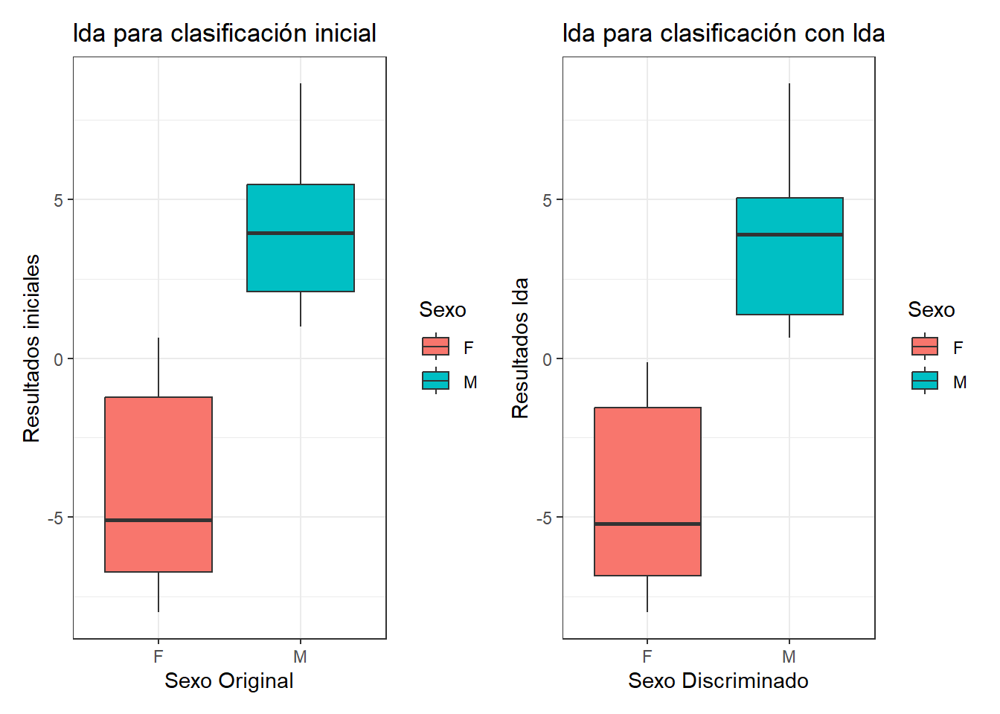
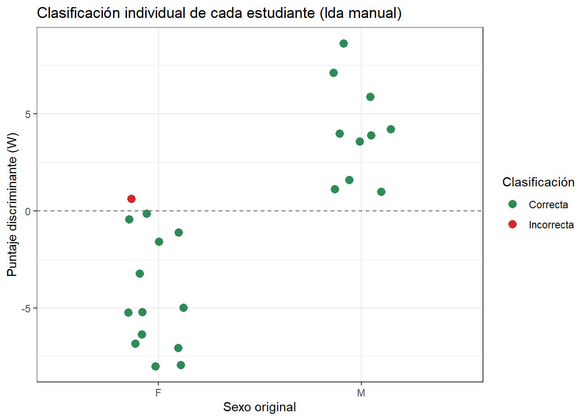
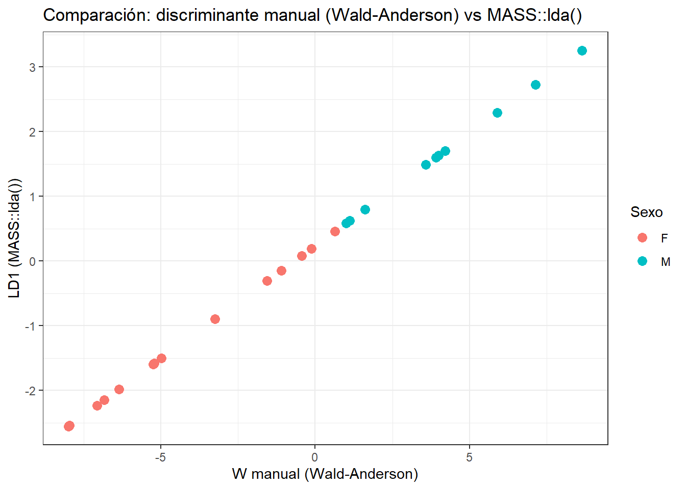

# install.packages(c("kableExtra","patchwork"))
# Librerías o paquetes requeridos (se dejan todas aquí, al inicio)
library(tidyverse)
library(ggplot2)
library(vegan)
library(MASS)
library(kableExtra)
library(patchwork) # Para combinar figuras ggplot2 (reemplaza a gridExtra/grid.arrange)
library(readxl) # Para leer datos1.xlsx
# Nota: MASS también tiene una función select(), y como se carga después de
# tidyverse, "tapa" a dplyr::select(). Por eso en este documento se escribe
# siempre dplyr::select() de forma explícita, para evitar ese conflicto.2.1 Cargar librerías
2.2 Cargar la base de datos
# 2.2 Cargar la base de datos (datos1.xlsx) - misma fuente que el taller de PCA
datos2 <- read_xlsx("datos1.xlsx", sheet = "datos1 - copia") %>%
rename(Nombre = 1, Sexo = 2, LTot = 3, Cint = 4, LEsp = 5, LBra = 6) %>%
drop_na() # Elimina estudiantes con datos faltantes (estud. 13)
glimpse(datos2) # Estructura de la base de datos (equivalente tidyverse de str())Rows: 24
Columns: 6
$ Nombre <chr> "Alumno 1", "Alumno 2", "Alumno 3", "Alumno 4", "Alumno 5", "Al…
$ Sexo <chr> "F", "F", "F", "F", "M", "M", "M", "M", "M", "M", "F", "F", "F"…
$ LTot <dbl> 170, 160, 156, 173, 170, 165, 170, 181, 175, 186, 168, 155, 158…
$ Cint <dbl> 85, 80, 88, 63, 86, 89, 88, 80, 76, 45, 65, 70, 72, 79, 68, 68,…
$ LEsp <dbl> 43, 41, 35, 53, 47, 45, 56, 60, 55, 60, 49, 36, 40, 43, 39, 38,…
$ LBra <dbl> 57, 54, 48, 59, 56, 61, 59, 55, 54, 86, 55, 50, 55, 82, 50, 70,…head(datos2) %>%
kbl(booktabs = FALSE) %>%
kable_classic(full_width = FALSE, html_font = "Cambria")| Nombre | Sexo | LTot | Cint | LEsp | LBra |
|---|---|---|---|---|---|
| Alumno 1 | F | 170 | 85 | 43 | 57 |
| Alumno 2 | F | 160 | 80 | 41 | 54 |
| Alumno 3 | F | 156 | 88 | 35 | 48 |
| Alumno 4 | F | 173 | 63 | 53 | 59 |
| Alumno 5 | M | 170 | 86 | 47 | 56 |
| Alumno 6 | M | 165 | 89 | 45 | 61 |
2.3 Matrices por cada sexo
a) Opción general
# Matriz de hombres (hombres)
hombres <- datos2[datos2$Sexo == "M",]
head(hombres)# A tibble: 6 × 6
Nombre Sexo LTot Cint LEsp LBra
<chr> <chr> <dbl> <dbl> <dbl> <dbl>
1 Alumno 5 M 170 86 47 56
2 Alumno 6 M 165 89 45 61
3 Alumno 7 M 170 88 56 59
4 Alumno 8 M 181 80 60 55
5 Alumno 9 M 175 76 55 54
6 Alumno 10 M 186 45 60 86b) Opción en tidyverse
# Matriz de hombres (hombres)
hombres <- datos2 %>%
filter(Sexo == "M")
head(hombres)# A tibble: 6 × 6
Nombre Sexo LTot Cint LEsp LBra
<chr> <chr> <dbl> <dbl> <dbl> <dbl>
1 Alumno 5 M 170 86 47 56
2 Alumno 6 M 165 89 45 61
3 Alumno 7 M 170 88 56 59
4 Alumno 8 M 181 80 60 55
5 Alumno 9 M 175 76 55 54
6 Alumno 10 M 186 45 60 86# Matriz de mujeres (mujeres)
mujeres <- datos2 %>%
filter(Sexo == "F")
head(mujeres)# A tibble: 6 × 6
Nombre Sexo LTot Cint LEsp LBra
<chr> <chr> <dbl> <dbl> <dbl> <dbl>
1 Alumno 1 F 170 85 43 57
2 Alumno 2 F 160 80 41 54
3 Alumno 3 F 156 88 35 48
4 Alumno 4 F 173 63 53 59
5 Alumno 11 F 168 65 49 55
6 Alumno 12 F 155 70 36 502.4 Vectores de medias por cada sexo
# Vector de medias de los hombres (promedio.h)
# dplyr::select(LTot:LBra) evita depender de la posición de las columnas (más robusto que [,2:5])
promedio.h <- hombres %>%
dplyr::select(LTot:LBra) %>%
colMeans()
promedio.h LTot Cint LEsp LBra
173.3 83.4 52.0 62.5 # Vector de medias de las mujeres (promedio.m)
promedio.m <- mujeres %>%
dplyr::select(LTot:LBra) %>%
colMeans()
promedio.m LTot Cint LEsp LBra
161.92857 72.14286 40.64286 59.57143 # Vector de diferencia de medias (dif)
dif <- promedio.h - promedio.m
t.dif <- t(dif)
t.dif LTot Cint LEsp LBra
[1,] 11.37143 11.25714 11.35714 2.928571# Vector de suma de medias (suma)
# Nota: se renombra "sum" -> "suma" para no usar el mismo nombre de la función base sum()
suma <- promedio.h + promedio.m
suma LTot Cint LEsp LBra
335.22857 155.54286 92.64286 122.07143 2.5 Matriz de covarianza generalizada invertida (S-1)
# Covarianza de hombres (cov.h)
cov.h <- var(hombres %>%
dplyr::select(LTot:LBra))
round(cov.h, 2) LTot Cint LEsp LBra
LTot 37.57 -79.02 27.11 30.17
Cint -79.02 347.16 -57.00 -116.89
LEsp 27.11 -57.00 37.11 -5.22
LBra 30.17 -116.89 -5.22 134.28# Covarianza de mujeres (cov.m)
cov.m <- var(mujeres %>%
dplyr::select(LTot:LBra))
round(cov.m, 2) LTot Cint LEsp LBra
LTot 36.99 5.01 22.97 22.12
Cint 5.01 94.13 -24.41 -15.24
LEsp 22.97 -24.41 35.32 8.60
LBra 22.12 -15.24 8.60 95.96# Tamaño de la muestra (No de estudiantes por cada sexo)
datos2$Sexo <- as.factor(datos2$Sexo)
summary(datos2$Sexo) F M
14 10 # Matriz de varianza-covarianza generalizada (ponderada por grados de libertad n-1)
# Se calcula n.h y n.m dinámicamente en vez de escribir 10, 14 y 24 "a mano":
# así el código no se rompe si cambia el número de estudiantes
n.h <- nrow(hombres)
n.m <- nrow(mujeres)
cov.g <- ((n.h - 1) * cov.h + (n.m - 1) * cov.m) / (n.h + n.m - 2)
cov.g.i <- solve(cov.g)
round(cov.g.i, 3) LTot Cint LEsp LBra
LTot 0.067 -0.004 -0.048 -0.016
Cint -0.004 0.008 0.010 0.005
LEsp -0.048 0.010 0.071 0.014
LBra -0.016 0.005 0.014 0.0152.6 Discriminante lineal de Wald y Anderson (W)
# Convertir datos2 a formato matricial, solo variables numéricas (datos3)
datos3 <-
datos2 %>%
dplyr::select(LTot:LBra) %>%
as.matrix()
head(datos3) LTot Cint LEsp LBra
[1,] 170 85 43 57
[2,] 160 80 41 54
[3,] 156 88 35 48
[4,] 173 63 53 59
[5,] 170 86 47 56
[6,] 165 89 45 61# Vectores de los estudiantes (xi) - se calcula "a mano" para los primeros 10 estudiantes
x1 <- as.vector(datos3[1,])
x2 <- as.vector(datos3[2,])
x3 <- as.vector(datos3[3,])
x4 <- as.vector(datos3[4,])
x5 <- as.vector(datos3[5,])
x6 <- as.vector(datos3[6,])
x7 <- as.vector(datos3[7,])
x8 <- as.vector(datos3[8,])
x9 <- as.vector(datos3[9,])
x10 <- as.vector(datos3[10,])# Correr el modelo lda para los 10 estudiantes
# t.dif, suma, xi, cov.g.i
W1 <- ((t.dif %*% cov.g.i %*% x1) - (1/2 * (t.dif %*% cov.g.i %*% suma)))
W2 <- ((t.dif %*% cov.g.i %*% x2) - (1/2 * (t.dif %*% cov.g.i %*% suma)))
W3 <- ((t.dif %*% cov.g.i %*% x3) - (1/2 * (t.dif %*% cov.g.i %*% suma)))
W4 <- ((t.dif %*% cov.g.i %*% x4) - (1/2 * (t.dif %*% cov.g.i %*% suma)))
W5 <- ((t.dif %*% cov.g.i %*% x5) - (1/2 * (t.dif %*% cov.g.i %*% suma)))
W6 <- ((t.dif %*% cov.g.i %*% x6) - (1/2 * (t.dif %*% cov.g.i %*% suma)))
W7 <- ((t.dif %*% cov.g.i %*% x7) - (1/2 * (t.dif %*% cov.g.i %*% suma)))
W8 <- ((t.dif %*% cov.g.i %*% x8) - (1/2 * (t.dif %*% cov.g.i %*% suma)))
W9 <- ((t.dif %*% cov.g.i %*% x9) - (1/2 * (t.dif %*% cov.g.i %*% suma)))
W10 <- ((t.dif %*% cov.g.i %*% x10) - (1/2 * (t.dif %*% cov.g.i %*% suma)))# Data.frame de las 10 funciones discriminantes
W <- data.frame(W1, W2, W3, W4, W5, W6, W7, W8, W9, W10)
W W1 W2 W3 W4 W5 W6 W7 W8
1 -0.1304789 -3.245329 -5.249763 0.6343242 1.613008 1.114634 5.900341 7.131027
W9 W10
1 3.585364 3.9924233. Discriminante - lda con Tidyverse
Base de datos del ejercicio
head(datos2)# A tibble: 6 × 6
Nombre Sexo LTot Cint LEsp LBra
<chr> <fct> <dbl> <dbl> <dbl> <dbl>
1 Alumno 1 F 170 85 43 57
2 Alumno 2 F 160 80 41 54
3 Alumno 3 F 156 88 35 48
4 Alumno 4 F 173 63 53 59
5 Alumno 5 M 170 86 47 56
6 Alumno 6 M 165 89 45 613.1 Vectores de media
# Agrupar por sexo y calcular medias
# across(LTot:LBra, mean) en vez de across(1:4, mean): selecciona por nombre,
# no por posición, así no importa el orden de las columnas
medias <- datos2 %>%
group_by(Sexo) %>%
summarise(across(LTot:LBra, mean))
medias# A tibble: 2 × 5
Sexo LTot Cint LEsp LBra
<fct> <dbl> <dbl> <dbl> <dbl>
1 F 162. 72.1 40.6 59.6
2 M 173. 83.4 52 62.5# Vector de diferencia de medias (dif)
dif <- as.matrix(medias[medias$Sexo == "M", -1]) - as.matrix(medias[medias$Sexo == "F", -1])
dif <- t(dif) # Vector de diferencia de medias transpuesto
dif [,1]
LTot 11.371429
Cint 11.257143
LEsp 11.357143
LBra 2.928571# Vector de suma de medias (suma)
suma <- as.matrix(medias[medias$Sexo == "M", -1]) + as.matrix(medias[medias$Sexo == "F", -1])
suma <- t(suma)
suma [,1]
LTot 335.22857
Cint 155.54286
LEsp 92.64286
LBra 122.071433.2 Función para automatizar el lda
# Función discriminante para todos los estudiantes
# Nota: el resultado se llama "lda_manual" y NO "lda", para no usar el mismo
# nombre de la función MASS::lda() que se usa más adelante en la sección 3.5
# (R sabe diferenciarlos al llamarlos con paréntesis, pero es más claro así)
lda_manual <- datos2 %>%
dplyr::select(LTot:LBra) %>%
as.matrix() %>%
apply(1, function(x) {
x <- as.matrix(x) # Convertir x a un vector columna (4x1)
W <- (t(dif) %*% cov.g.i %*% x) - (1/2 * t(dif) %*% cov.g.i %*% suma)
return(W)
}) %>%
tibble(Alumnos = datos2$Nombre, resultados_W = .) %>% # Nombre real, no rownames()
mutate(Sexo_discriminado = ifelse(resultados_W < 0, "F", "M"), # Discriminante
Sexo_original = datos2$Sexo) # Sexo original
head(lda_manual) %>%
kbl(booktabs = FALSE) %>%
kable_classic(full_width = FALSE, html_font = "Cambria")| Alumnos | resultados_W | Sexo_discriminado | Sexo_original |
|---|---|---|---|
| Alumno 1 | -0.1304789 | F | F |
| Alumno 2 | -3.2453292 | F | F |
| Alumno 3 | -5.2497626 | F | F |
| Alumno 4 | 0.6343242 | M | F |
| Alumno 5 | 1.6130084 | M | M |
| Alumno 6 | 1.1146336 | M | M |
3.3 Tabla de contingencia
# with() evita usar attach(), que modifica el espacio de nombres global
# y puede generar conflictos difíciles de rastrear en sesiones largas
tabla_contingencia <- with(lda_manual,
table(Sexo_discriminado, Sexo_original))
tabla_contingencia Sexo_original
Sexo_discriminado F M
F 13 0
M 1 10# Aciertos
aciertos <- sum(diag(tabla_contingencia))
aciertos[1] 23# Total de estudiantes
total <- sum(tabla_contingencia)
total[1] 24# Porcentaje de aciertos
aciertos2 <- (aciertos/total) * 100
aciertos2[1] 95.833333.4 Componente gráfico
# Grafico de cajas para clasificación inicial
fig_inicial <-
ggplot(lda_manual, aes(x = Sexo_original,
y = resultados_W,
fill = Sexo_original)) +
geom_boxplot() +
labs(title = "lda para clasificación inicial",
x = "Sexo Original", y = "Resultados iniciales", fill = "Sexo") +
theme_bw()
# Grafico de cajas para clasificación con el lda
fig_discriminada <-
ggplot(lda_manual, aes(x = Sexo_discriminado,
y = resultados_W,
fill = Sexo_discriminado)) +
geom_boxplot() +
labs(title = "lda para clasificación con lda",
x = "Sexo Discriminado", y = "Resultados lda", fill = "Sexo") +
theme_bw()
# Graficar las dos figuras en un solo panel con patchwork
# (versión ggplot2 de grid.arrange(), sin depender de gridExtra/grid)
fig_inicial + fig_discriminada
# Figura adicional: ¿a qué estudiantes clasificó bien o mal el lda?
lda_manual <-
lda_manual %>%
mutate(Clasificacion = ifelse(Sexo_discriminado == Sexo_original, "Correcta", "Incorrecta"))
ggplot(lda_manual, aes(x = Sexo_original,
y = resultados_W,
color = Clasificacion)) +
geom_jitter(width = 0.15, size = 3) +
geom_hline(yintercept = 0, linetype = "dashed", color = "grey40") +
scale_color_manual(values = c(Correcta = "#2E8B57", Incorrecta = "#D62728")) +
labs(title = "Clasificación individual de cada estudiante (lda manual)",
x = "Sexo original", y = "Puntaje discriminante (W)",
color = "Clasificación") +
theme_bw()
3.5 Comparación con la función automatizada MASS::lda()
# Función automatizada de análisis discriminante lineal
# (el mismo cierre que prcomp() le dio al taller de PCA: primero a mano, luego con la función de R)
modelo_lda <- lda(Sexo ~ LTot + Cint + LEsp + LBra, data = datos2)
modelo_ldaCall:
lda(Sexo ~ LTot + Cint + LEsp + LBra, data = datos2)
Prior probabilities of groups:
F M
0.5833333 0.4166667
Group means:
LTot Cint LEsp LBra
F 161.9286 72.14286 40.64286 59.57143
M 173.3000 83.40000 52.00000 62.50000
Coefficients of linear discriminants:
LD1
LTot 0.04120765
Cint 0.06119582
LEsp 0.14351940
LBra 0.02713046pred_lda <- predict(modelo_lda)
# Se añade la predicción de MASS::lda() a la tabla de resultados manuales
lda_manual <- lda_manual %>%
mutate(Sexo_MASS = pred_lda$class,
LD1_MASS = as.numeric(pred_lda$x[,1]))
# Tabla de contingencia y porcentaje de aciertos de MASS::lda()
tabla_MASS <- with(lda_manual,
table(Sexo_MASS, Sexo_original))
tabla_MASS Sexo_original
Sexo_MASS F M
F 13 0
M 1 10round((sum(diag(tabla_MASS)) / sum(tabla_MASS)) * 100, 1)[1] 95.8# Comparación visual: el discriminante calculado a mano (W) vs el de MASS::lda() (LD1)
# Si ambos coinciden en tendencia, es evidencia de que el cálculo manual es correcto
ggplot(lda_manual,
aes(x = resultados_W, y = LD1_MASS, color = Sexo_original)) +
geom_point(size = 3) +
labs(title = "Comparación: discriminante manual (Wald-Anderson) vs MASS::lda()",
x = "W manual (Wald-Anderson)", y = "LD1 (MASS::lda())", color = "Sexo") +
theme_bw()
Cuestionario de repaso
Estas preguntas son para trabajar en casa. No tienen una única respuesta “correcta” en el sentido de una
¿Qué papel cumple el vector de diferencia de medias (
dif = promedio.h - promedio.m) en la fórmula del discriminante de Wald y Anderson? ¿Qué pasaría con el discriminante si hombres y mujeres tuvieran promedios morfométricos casi idénticos?Calcular paso a paso, en R, el puntaje discriminante
Wpara un/a estudiante inventado/a por ti, usandodif,sumaycov.g.iya calculados en el taller. ¿Lo clasificaría como hombre o mujer? ¿Por qué el signo deWes lo que decide la clasificación?Observar la tabla de contingencia (
Sexo_discriminadovsSexo_original). ¿Qué tipo de error es más frecuente en sus datos: clasificar a un hombre como mujer, o a una mujer como hombre? Proponer una posible explicación morfométrica de ese error.Comparar el porcentaje de aciertos del modelo manual (Wald-Anderson) con el de
MASS::lda(). Si los porcentajes son muy parecidos, ¿qué dice eso sobre la fórmula que se calculó a mano?En la figura de aciertos/errores por estudiante (sección 3.4), identificar un estudiante mal clasificado. Revisar sus cuatro medidas morfométricas originales: ¿se parecen más al promedio de su propio sexo o al del sexo opuesto? ¿Qué variable será la que más “confundió” al modelo?